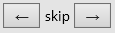

How to View the Video
Playing the Video
You can start and stop the video by typing a space.
You can also use the video player's controls to stop, start, and
move around in the video.
You may have to hover the mouse over the video player to display
its controls.
Adjusting Video Size
When the video is playing, the viewer is normally made as large as
its window allows. At certain points, the video will become small and
some content will appear on its web page.
Moving About in the VIdeo
The arrow buttons

skip forward and back in the video by 5
seconds. This can be useful for repeating something you missed.
The
Contents
button displays the table of contents. Clicking on
an entry takes you to that part of the video.
Playback Speed
The
Speed
button controls the video's playback rate.
Copying Text from the Web Page
Sometimes when the video becomes small, you are asked to copy text from
the Web page to paste into the Toolbox. The text appears in
microscopic print that you can copy like normal text or by simply
clicking on a
Copy
button.
Known Problems
-
Sliding the viewer's seek bar indicator past the points where the
video becomes small may not work smoothly. Clicking on the seek
bar always works fine.